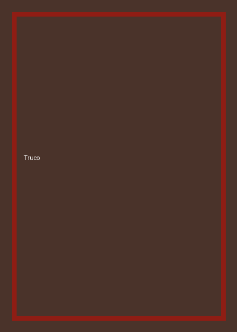

Truco
- Jugadores
- 2, 4 o 6
- Duración
- 30 minutos
- Edad
- Desde 10 años
Con mazo español de 40 cartas. El envido y el truco se cantan por separado, y buena parte del juego pasa por mentir bien y leer a la pareja. Imprescindible en cualquier ludoteca de acá.
Descargar reglamento de Truco (PDF)